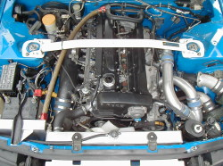
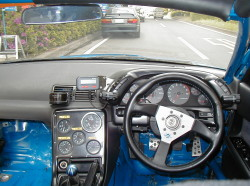
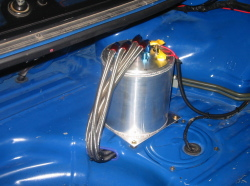
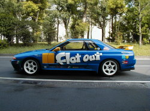
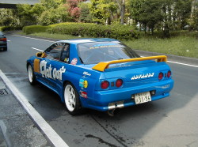
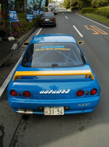
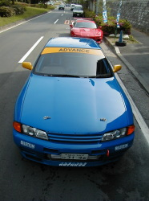

ＦＬＡＴＯＵＴ ＧＴ－Ｒ（ＢＮＲ３２）








当初のコンセプトは「軽量ボディにノーマルエンジン、ノーマルタービンでどこまで楽しめるか？」というものだったFLATOUT 32GTR（金銭的理由もあり）。しかし2001年4月26日のAPEX CUPにてノーマルタービンがブローしてしまい、タービンをHKS 2530に交換。
ついでにパイピング・アウトレットをHKS製に変更し、カムを東名製に交換した結果、約500ps前後のパワーを手に入れました。
その後、走行会では社長の新堀がメインでドライブするようになり、快調だったエンジンが次第にブローバイからオイルを吐くようになりました（社長の運転が荒すぎる！！）。
2002年2月にエンジンを降ろし、スタッフミーティングの結果、「エンジン製作総予算100万円（パーツ代・工賃・加工代込み）で、どこまで大金をかけたフルチューンGT-Rに迫れるか？」というテーマで見事に復活させました。
足回りのさらなるリセッティングやエンジンマウントのローマウント加工など、細部まで見直しを加え、社長のドライブ次第でさらに化ける可能性を秘めた一台となりました。
当店のテーマである「高次元でのバランス」を追求し続けているFLATOUT 32GT-Rです。
| 日付 | コース | ドライバー | タイム |
|---|---|---|---|
| 2001年 | FISCO | 新堀 | 1'43''085 |
| 日付 | 名称 | コース | クラス | ドライバー | 結果 |
|---|---|---|---|---|---|
| 2000.10.19 | HKS主催 SPECIAL STAGE IN FISCO | FISCO | クラスA | 松村 | 優勝 |
| 2001.04.26 | APEX主催 APEX CUP ROUND 1 | FISCO | GTRクラス | 富田（お客様） | リタイヤ |
| 2001.06.21 | HKS主催 HIPER CHALLENGE 2001 | FISCO | クラスPRO | 新堀 | ３位 |
| 2001年 | アドバンス主催 FISCOタイムトライアルSPL年間シリーズ（全７戦） | FISCO | 新堀 | ３位 | |
| 2002.05.29 | APEX主催 APEX CUP ROUND FUJI | FISCO | GTRクラス | 新堀 | －－ |
| エンジン加工 |
シリンダー ボーリング（ダミーヘッド使用） シリンダー 上面研磨 クランクシャフト 曲がり修正 クランクシャフト ダイナミックバランス ヘッド バルブシートカット ヘッド バルブ研磨 ヘッド バルブすり合わせ ヘッド 面研磨 など |
| エンジンパーツ |
東名 鍛造ピストン 東名 ヘッドガスケット 東名 カムシャフト |
| タービン廻り | HKS 2530ツイン HKS タービンアウトレット HKS パイピングKIT |
| コンピューター・電装品 |
FLATOUT ECU HKS EVCⅢ 大森 メーター各種 |
| インタークーラー | ARC レーシング |
| 冷却系 | ARC プレステージR ラジエター HKS オイルクーラー |
| 燃料系 |
SARD 720cc インジェクター NISMO フューエルポンプ NISMO フューエルレギュレーター KSP コレクタータンク |
| マフラー | ARC チタンマフラー APEX フロントパイプ |
| 駆動系 | OS ツインプレートクラッチ 純正 リアデフ加工 |
| 足廻り | FLATOUT サスペンションKIT NISMO リンクセット |
| ブレーキ |
キャリパー：Vspec用 ブレンボ ローター：プロジェクトμ パッド：エンドレス ブレーキホース：APP |
| 補強 |
ロールゲージ：オクヤマ製 13点スチール タワーバー：オクヤマ（フロント・リア） ウレタン補強 / スポット増し |
| 内装 | シート：レカロ SP-G ベルト：ウィランズ 4点 |
| 外装 | ノーマル NISMO仕様 |
| タイヤ＆ホイール | RAY’S TE37 BS RE540S |
| 軽量＆その他 |
アンダーコート剥し エアコン・ヒーターレス ハイキャスユニット・ホース類外し エンジンローマウント など |
| オイル |
エンジン：MOTUL コンペ 15W-50 ミッション：RED LINE ショックプルーフ デフ：RED LINE 80-140 ブレーキ：エンドレス DOT4 |